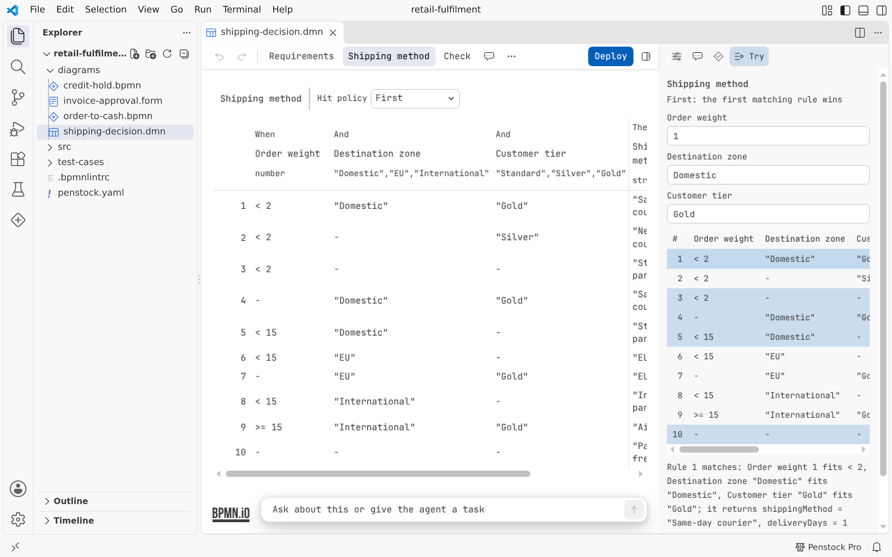

VS Code / Start here
Installing in VS Code
How to put Penstock into VS Code, and how to check that it works.
What you need
| VS Code | Version 1.88 or later. The extension declares ^1.88.0. The automated tests of the extension run on VS Code 1.90. |
| Editors built on VS Code | The extension also runs in Cursor, Windsurf and VSCodium. |
| The extension | Publisher penstock, name penstock, shown as Penstock. Its id is penstock.penstock. |
| A local folder | The extension reads penstock.yaml, templates and linked files from the local disk, so it does not support virtual workspaces. |
| The price | Free. Every new machine also gets 30 days of Pro. See Plans and licence. |
Install from the Marketplace
- Open the Extensions view. The keys are Ctrl+Shift+X, or Cmd+Shift+X on a Mac.
- Search for Penstock and press Install.
- Open any
.bpmnfile. It opens in the Penstock editor.
You can also open the Marketplace page in a browser and press Install there.
From a terminal, code --install-extension penstock.penstock installs it from the Marketplace.
Install from a VSIX file
- Open the Extensions view.
- Open its … menu and choose Install from VSIX….
- Pick the
.vsixfile.
From a terminal, code --install-extension penstock.vsix does the same.
First run
- Nothing needs to be set up. Open a
.bpmn,.dmnor.formfile and the editor opens in place of the text. - A file that was already open as text when the extension started is switched to the editor, unless you opened it as text on purpose. See Where things are in VS Code.
- The first time the editor opens, it shows a short tour. It is shown once. Penstock: Show the tour again in the Command Palette plays it again.
- A status bar item on the right shows the licence, for example Penstock Pro trial: 27d.

.dmn file opens in the same editor, as a decision table. The status bar reads Penstock Pro trial: 30d.The 30-day trial
A new machine gets 30 days of Pro. The status bar counts the days down. When the trial ends, the item reads Penstock Free and a paid feature explains itself when you reach for it. The editors, deployment and everything else that is free keep working. The licence is kept in ~/.penstock, which the plugin and the command line share, so they all see the same trial. See Licence in VS Code.
Uninstall
- Open the Extensions view and find Penstock.
- Press Uninstall.
Your diagrams are ordinary files, so they stay as they are. Penstock keeps a few small files of its own on your machine. To remove them all, delete the folder ~/.penstock. Files Penstock reads and writes lists each one.
The command line is separate
The extension does not install the penstock command. The command line needs Node.js 22.22 or later. See Command line.
Common problems
- VS Code says the extension is not compatible.
- Your VS Code is older than 1.88. Update VS Code first.
- A
.bpmnfile opens as plain XML. - See Troubleshooting.
- Nothing happens in a virtual workspace.
- The extension needs files on the local disk. Open a local folder.